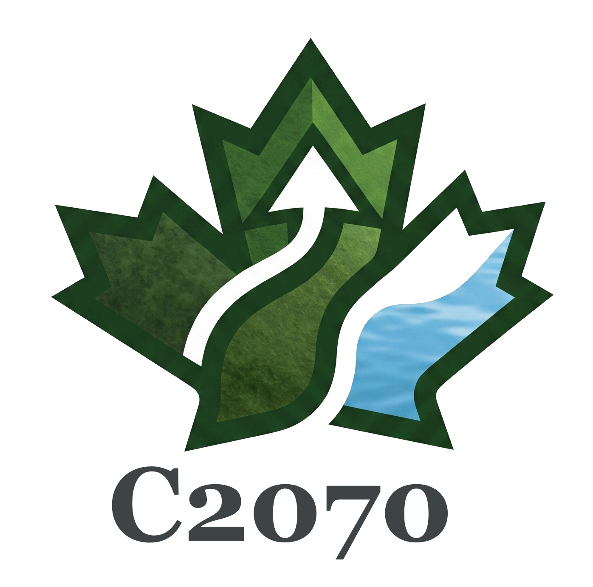
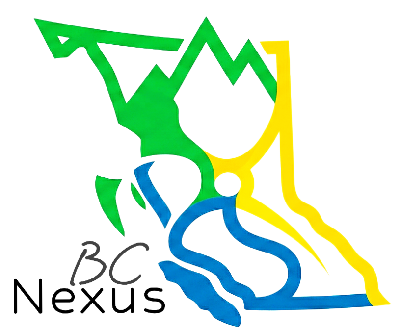
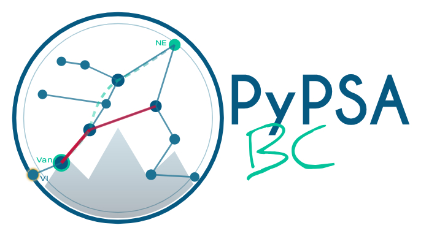
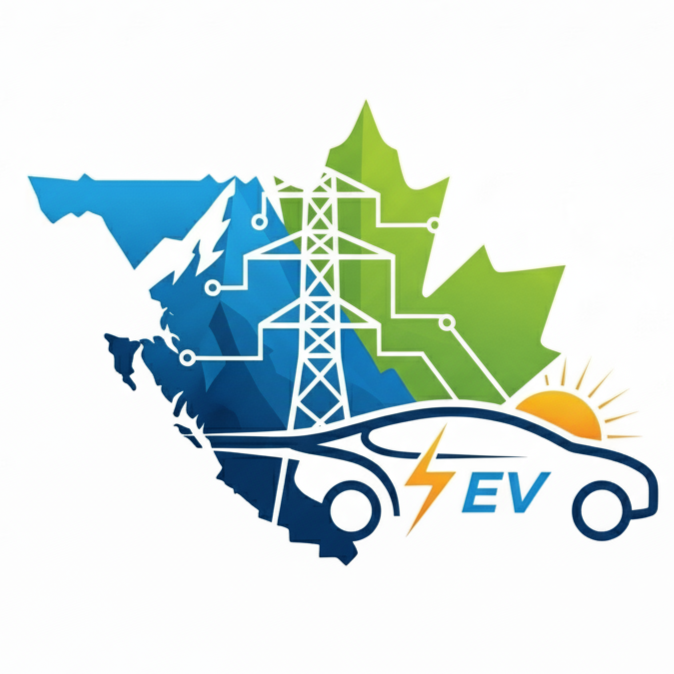
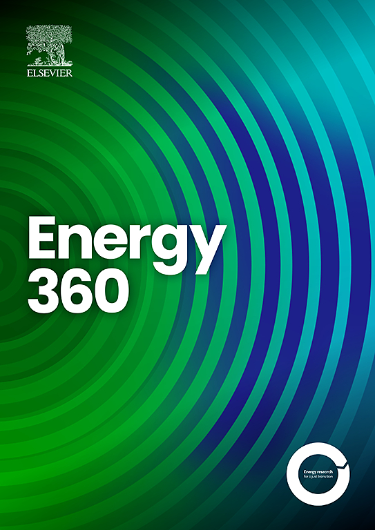

Energy Planner & Analyst (Consultant)
BC Hydro
Portfolio optimization, planning analytics and decision-support tools for the provincial Integrated Resource Plan.
Energy planning · Research · Open models
I’m Elias, an energy systems modeller and doctoral researcher working at the intersection of long-term resource planning, open-source modelling and evidence-based decisions.

My focus
Badges & training
Also trained in
Curriculum vitae
Portfolio optimization, planning analytics and decision-support tools for the provincial Integrated Resource Plan.
Combining capacity-expansion and operational power-system models for reliable, cost-effective decarbonization.
Integrated energy and power master planning with JICA and the Institute of Energy Economics, Japan.
 Bangladesh India Friendship Power Company
Bangladesh India Friendship Power CompanyTariff modelling and technical oversight for a 1,320 MW power project.
Generation planning, demand forecasting and studies covering more than 4,000 MW of capacity.

 BPDB · Teletalk · HRC Technologies
BPDB · Teletalk · HRC TechnologiesPower-plant commercial operations, transmission networks and telecom infrastructure.
Simon Fraser University
2022–2024 (Master’s-to-PhD progression) — PresentUniversity of Dhaka
2019 · CGPA 3.35/4.00MIST / BUP
2011 · CGPA 3.50/4.00Badges & training
Also trained in
Open model land
Contributions spanning resource assessment, power-system optimization, model linking and electrification.

Lead contributionExploring pathways toward a low-carbon energy system.
Visit project ↗ Lead contribution
Lead contributionSolar and land-based wind resource assessment.
Visit project ↗
Lead contributionIntegrated energy–water–land system exploration.
Visit project ↗
Lead contributionOpen power-system modelling for British Columbia.
Visit project ↗ Lead contribution
Lead contributionLinking complementary planning models.
Visit project ↗ Lead contribution
Lead contributionRepresenting storage technologies in OSeMOSYS.
Visit project ↗
Lead contributionEvaluating fleet electrification pathways and impacts.
Visit project ↗Research and scholarship
Selected work on renewable-energy potential, storage, electrification, resource planning and regional power systems.
M. E. Islam, P. McWhannel, and T. Niet, “Mapping feasible renewable transition space: Land-use, conservation, and grid-access constraints on wind and solar in British Columbia,” Energy 360, vol. 6, p. 100077, Dec. 2026.
DOI 10.1016/j.energ.2026.100077 ↗B. Borba, E. Islam, P. McWhannel, and T. Niet, “Storage in Long-Term Energy Planning Models with Temporal Aggregation: Best Practices and Algorithms,” SSRN, 2025.
View on SSRN ↗K. Kuling, M. E. Islam, P. McWhannel, E. Kjeang, and T. Niet, “Modelling the Grid Impacts of Electric Vehicle Uptake and Charging Strategies in British Columbia,” SSRN, 2025.
DOI 10.2139/ssrn.5592997 ↗B. Borba, M. E. Islam, P. McWhannel, and T. Niet, “Storage in Long-Term Energy Planning Models with Temporal Aggregation: Best Practices and Algorithms,” SSRN, 2025.
DOI 10.2139/ssrn.5584535 ↗N. Arianpoo, M. E. Islam, A. S. Wright, and T. Niet, “Electrification policy impacts on land system in British Columbia, Canada,” Renewable and Sustainable Energy Transition, vol. 5, p. 100080, Jan. 2024.
View publication ↗Md. E. Islam, Md. M. Z. Khan, D. Chattopadhyay, and J. Väyrynen, “Impact of COVID-19 on dispatch and capacity plan: A case study for Bangladesh,” The Electricity Journal, vol. 34, no. 5, p. 106955, Jun. 2021.
DOI 10.1016/j.tej.2021.106955 ↗Md. E. Islam, Md. M. Z. Khan, D. Chattopadhyay, and G. Draugelis, “Economic Benefits of Cross Border Power Trading: A Case Study for Bangladesh,” in 2020 IEEE Power & Energy Society General Meeting, Montreal, Canada, pp. 1–5.
DOI 10.1109/PESGM41954.2020.9282003 ↗Md. E. Islam, Md. M. Z. Khan, C. Nicolas, and D. Chattopadhyay, “Planning for Direct Load Control and Energy Efficiency: A Case Study for Bangladesh,” in 2019 IEEE Power & Energy Society General Meeting, Atlanta, USA, pp. 1–5.
DOI 10.1109/PESGM40551.2019.8973505 ↗Notes from the journey
Occasional milestones, conversations and reflections from my work, research and life in energy systems.
Active model development

Journal news · Energy 360 · Open access article
This study maps where new wind and solar projects could realistically go in British Columbia. It removes places that are protected, environmentally sensitive, or unsuitable for development. It also checks whether promising locations are close enough to the electricity grid. The results show how land choices can change the amount of renewable energy available. The maps can help planners compare practical pathways toward a cleaner electricity system.
Read the paper in Energy 360 ↗ SFU Graduate Student Profile
SFU Graduate Student Profile
Featured by Simon Fraser University
SFU’s Faculty of Graduate Studies profiled my path from power-utility planning into Sustainable Energy Engineering research. The conversation explores renewable-resource planning, open-source modelling, the value of research collaboration and the people who have supported my graduate journey.